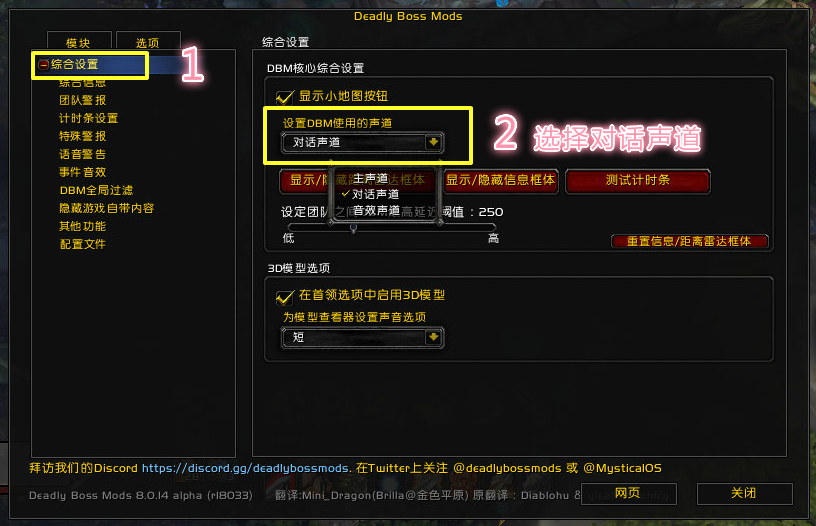

啰嗦一句，这个是“DBM语音包”，不是“DBM插件”，语音包需要依靠DBM插件才能正常使用！请确认你已经安装好DBM插件，如果没有，可以在点这里下载DBM主体插件
球儿的DBM语音包 食用方法：
1. 下载语音包，解压后，将[DBM-VPQiu]文件夹，复制到游戏客户端的/Interface/AddOns中即可，如下图所示：（不知道魔兽文件在哪？请在你的桌面wow的图标上，鼠标右键，选择“属性”，然后在弹出的对话框中，选择“打开文件位置”，就进入了wow的文件目录啦！）
2. 进入游戏，在对话框中输入“/dbm”，调出DBM设置界面，点击“选项-语音警告”，然后按照下图设置即可：
关于DBM音量大小的设置，可以按照下面的方法进行尝试
在游戏对话框中输入“/dbm”，调出DBM设置界面，然后按照下图设置即可：

然后，键盘左上角Esc，调出系统设置界面，参考下图的设置，就可以通过调节”对话音量“，来调整DBM的音量大小了
语音包修改建议：如果你在使用的过程，发现某些提示词吐字不清、音量太小等问题时，欢迎在打赏里留言告知！我会尽快修正，并迭代新的版本~（垃圾邮件太多根本找不到你的建议邮件，还是打赏靠谱，微信马上就能看到你的留言）
补充说明：本语音包只是娱乐向作品，只供大家偶尔换换口味，若追求音质和更新速度，还请回归夏女王的原帖，下载最权威的语音包： [夏一可DBM语音包]
未来的一些娱乐计划：
想录制一套纯娱乐的开心的搞笑的DBM自用，但是目前还没有台词，自个儿设计的台词都不够有趣...
如果你有有趣的台词，欢迎来信~ 只需提供一些常用的dbm提示即可，比如：快躲开、躲开冲锋、跑出人群等等
emmmm 其他版本待定，暂不支持方言版
关于语音包版权：
这个语音包完全是业余娱乐作品，非常的不专业，并且免费下载使用，遵循wow周边插件完全免费的原则 Lok'tar Ogar ~
感谢DBM官方dome提供的dbm自制教程以及技能对照表：
https://github.com/henryj/DBM-Voicepack-Demo/blob/master/DBM-VPDemo/HowTo.txt
https://github.com/henryj/DBM-Voicepack-Demo/blob/master/DBM-VPDemo/VoiceText.txt
感谢夏一可在github中留下的技能对照表：
https://github.com/Mini-Dragon/DBM-VoicePack-Yike/blob/master/voicelist.csv
懒人邮箱：
qiudbm # 163.com（每周或者每几周，打开一下“网易邮箱大师”，请投诉我的爸爸们等我看到你的邮件...尽管垃圾邮件非常多...）